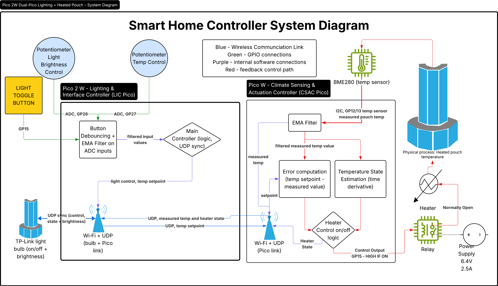
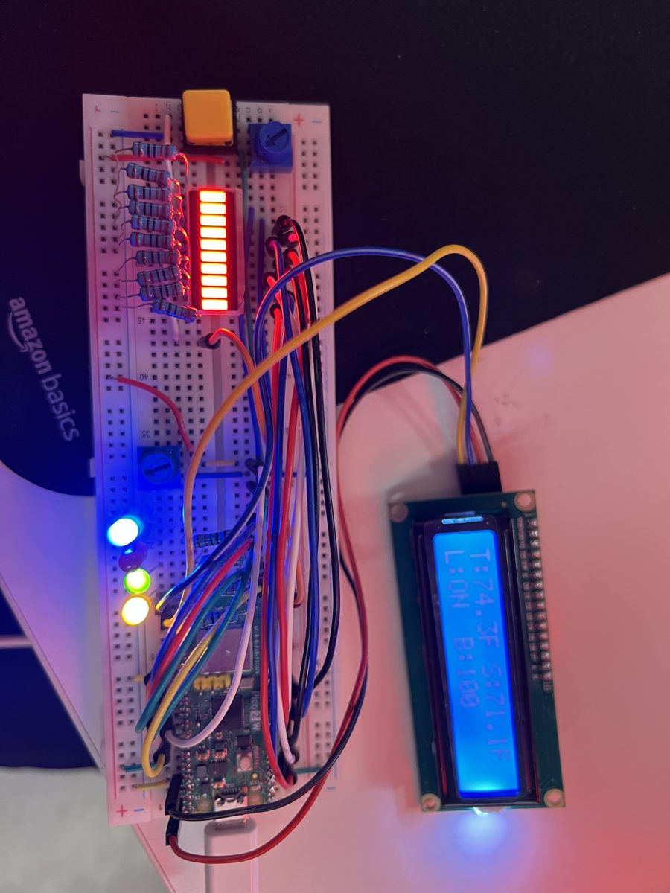
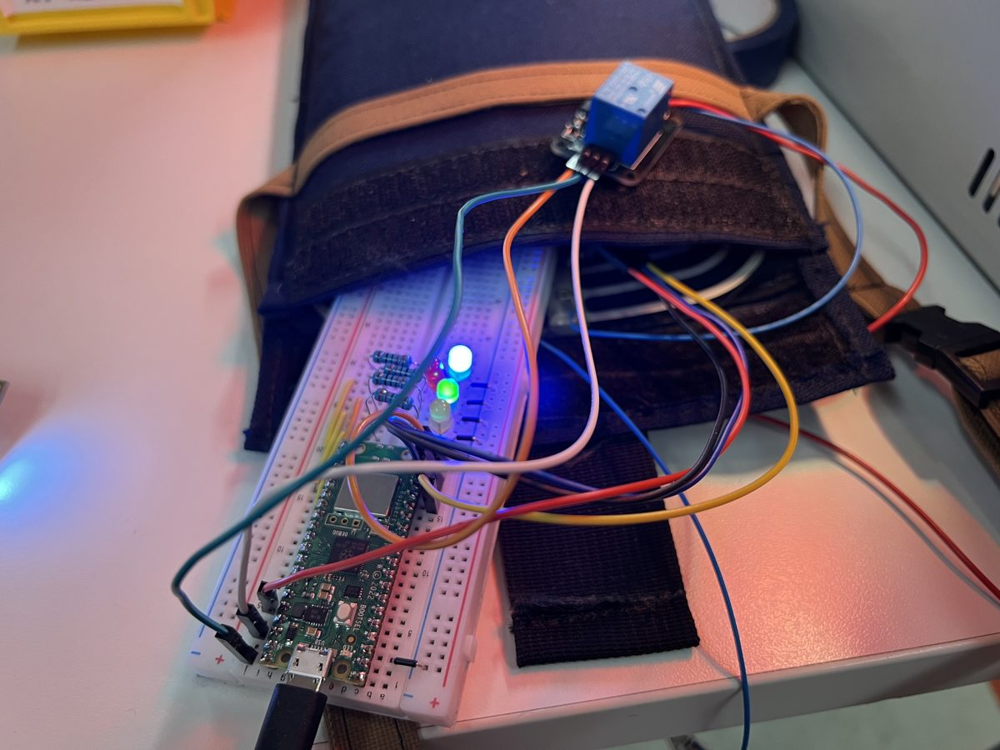
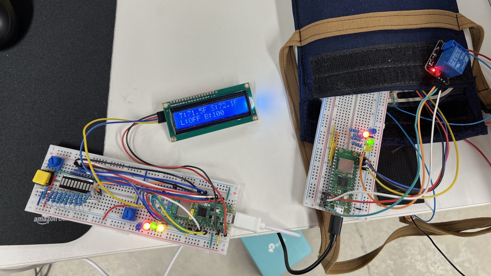

Smart Home Controller
SYSEN 5410 Final Project
TODO: Write a one-line tagline for the header above (replaces the placeholder "SYSEN 5410 Final Project").
Introduction
From my final report, Section 1 (p. 1)This project implements a smart home controller that simulates user control over certain subsystems in a home, such as lighting and climate. This system acts as a smart thermostat and allows the user to control smart bulbs in their home.
From my final report, Section 1 (p. 1)The primary motivation for the system came from the limitations of controlling smart home lighting appliances. Specifically, it is difficult to find a consumer-brand smart wall switch that does not require hot-wiring directly into the wall. The ecosystem surrounding the Raspberry Pi Pico 2 W microcontroller only requires 5V DC power for general operation, making it suitable for plugging the system into a wall outlet with an AC adapter. This inspired me to build a system with physical control of smart home lighting like TP-Link bulbs, bridging the gap between fully digital control of the lights and analog control of the lights via a wall switch.
TODO: Write a 2–3 sentence recruiter-facing overview (what it does, why you built it, the main engineering challenge) to replace or sit above these excerpts. The report's Section 1 (p. 1) has the material to adapt.
My Contributions
TODO: This was an individual project, so describe your own role and decisions in your own words: hardware design and wiring, firmware for both Picos, the control algorithm and filtering, UDP communication, and system testing. Pointing to specific design decisions (e.g. report §3.1 on rate-limiting the LCD, §3.2.2 on predictive cutoff and hysteresis) makes this section far stronger than a list of tasks.
System Architecture

TODO: Add alt-text/short caption approved by you if you want a different description than the one currently used for screen readers.
From my final report, Section 1 (pp. 1–2)There are two subsystems: one that controls lighting, and one that controls climate.
The Climate Sensing & Actuation Controller (CSAC Pico) is responsible for sensing, logic, and actuation of the system, while the Lighting & Interface Controller (LIC Pico) is responsible for sending the setpoint input to the CSAC Pico over Wi-Fi.
The system diagram in Figure 1 is a high-level overview of the system, with the LIC Pico responsible for input logic and lighting control on the left and the CSAC Pico that handles sensing and actuation on the right.
Inter-Pico communication (report §2.3)
From my final report, Section 2.3 (p. 5)Both Picos are connected to the Wi-Fi network with static IP addresses such that both Picos can talk to each other and reliably connect with each other over the same Wi-Fi router every time the system turns on. UDP packets are selected as connectionless protocols are preferred to prevent the main system thread from hanging and otherwise waiting on TCP linking.
TODO: Write a short "how the pieces fit together" paragraph for a non-specialist reader, walking through one user action end to end (e.g. turning the setpoint knob to the heater switching on).
Hardware



Lighting & Interface Controller (LIC Pico)
From my final report, Section 2.1.1 (p. 3)For physical input, a normally open pushbutton button (the yellow button) is used to toggle the smart bulb on or off. To detect button presses, the GPIO pin 15 is internally pulled up connected to one of the button terminals and the terminal is connected to ground. When the button creates contact between both terminals, the GPIO pin detects a LOW signal and then inverts the state of the bulb.
From my final report, Section 2.1.2 (p. 3)The user also receives indicators of various system statuses via the LCD display and indicator LEDs. The LCD display is connected to GPIO 16 and 17 using the I2C0 bus. This displays the current temperature in the pouch, the setpoint temperature, whether the light bulb is on/off, and the brightness of the light bulb.
| GPIO Pin | Function / Name | Description |
|---|---|---|
| GP2-GP12 | LED BAR | LED bar graph segments 1-10 |
| GP20 | LED IDI COOL | Cooling indicator LED |
| GP21 | LED IDI HEAT | Heating indicator LED |
| GP22 | LED IDI TEMP | HVAC system active indicator LED |
| GP28 | LED IDI UDP | UDP receive indicator LED |
| GP26 | POT LED_CTRL | Analog input for LED brightness control |
| GP27 | POT TEMP_CTRL | Analog input for temperature setpoint |
| GP15 | BTN LIGHT_CTRL | Pushbutton for toggling smart bulbs |
| GP16/17 | LCD SDA/SCL | I2C data/clock line for LCD |
Climate Sensing & Actuation Controller (CSAC Pico)
From my final report, Section 2.2.1 (p. 4)An insulated pouch with a resistive heating pad was selected to simulate the climate conditions of an insulated home environment. Thus, heat loss is very minimal and heat escapes quite slowly over time. However, turning on the heater for even just under a minute raises the internal temperature by a few degrees, which is ideal for demonstration purposes and quick testing of the system response.
From my final report, Section 2.2.2 (p. 4)To measure temperature, the BME280 sensor was selected. This is a common prototype-purpose environmental sensor that comes with humidity, temperature, and pressure sensing all in one package. It is able to detect changes in temperature pretty rapidly and sample quite accurately using the two-wire I2C bus and 3.3V power.
From my final report, Section 2.2.3 (p. 5)The controller outputs a HIGH or LOW signal via GPIO 15 depending on whether the system determines that the heater should be on or not. This signal is wired directly to the signal pin on the 5V relay breakout board, which uses a 5V relay similar to the one found in the kit. 5V power from VBUS is used to provide the power needed to actuate the relay. The normally open contact of the relay is wired up to the positive end of the resistive heating pad, and the common contact is wired up to a power supply that is set to 6.4V 2.34A, according to the spec of the heating pad. When the relay is ON, the normally open contact is tied to the common contact which starts the flow of current to the heating pad until the system decides to turn off the heater.
| GPIO Pin | Function / Name | Role in System |
|---|---|---|
| GP12/13 | BME280 SDA/SCL | I2C data/clock line for environmental sensing |
| GP3 | BME280 +3V3 | Sensor power supply (3.3V) |
| GP15 | HEATER RLY | Relay control output for heating actuator |
| VBUS | RLY +5V | Relay module power input (5V) |
| GP19 | LED IDI TEMP | HVAC system active indicator LED |
| GP18 | LED IDI HEAT | Heating active indicator LED |
| GP16 | LED IDI COOL | Cooling active indicator LED |
| GP21 | LED IDI UDP | UDP receive indicator LED |
TODO: Write a short note on the hardware design decision you are proudest of (e.g. relay isolation, insulated-pouch test setup) and any wiring or debugging problems you hit. The report (§2) describes what was built but not what went wrong.
Software
Lighting & Interface Controller
From my final report, Section 3.1 (p. 6)The LIC Pico contains software to process user inputs, sync system state across the Pico and smart bulb, and control the smart bulb over UDP. The main loop is largely event-driven, waiting for user input and/or new temperature readings from the CSAC to update the indicators. This event-driven loop is implemented to prevent quick updates of the I2C display, which fails when too many events are triggered and when it tries to update too quickly. For example, when the potentiometer value changed, the LCD would update at the loop frequency, which is too quick and bottlenecks the I2C bus, eventually causing glitchy characters to appear on the LCD. Thus, the LCD and indicator updates were rate limited as periodic tasks to prevent quick event-driven changes such as changing a potentiometer apart from some resting position.
Potentiometer filtering and mapping (report §3.1.1)
Inputs from the potentiometer are filtered through a three step process. First, the 4 most recent values of the ADC are averaged. Then, this average value is mapped from a 16-bit ADC value to a brightness range of 0-100 or temperature range of 59-86 degrees Fahrenheit. Then, the input is passed through a exponential moving average filter that takes the previous filtered value and takes in the value of the current step and applies a weighted average between the two values, producing a filtered value for the current time step. 0.2 was chosen to smooth out the input signal while also providing a clean balance of adapting to the latest input values.
def _ema(prev, new, alpha):
if prev is None:
return new
return alpha * new + (1 - alpha) * prev
def map_value(x, in_min, in_max, out_min, out_max):
return (x - in_min) * (out_max - out_min) / (in_max - in_min) + out_minClimate Sensing & Actuation Controller
From my final report, Section 3.2.1 (p. 9)The CSAC Pico uses the MicroPython machine.I2C interface to read the BME280 registers every 200 ms. Raw temperature values are converted to °C using the sensor’s calibration coefficients, then pushed into a light EMA filter with a weight of 0.9 to the latest sensor reading. This weight was chosen to reflect the fast-acting heater placed inside the pouch and allow the system to respond quickly to changes in heat while also reducing noise in the reading to some degree. This temperature is then converted to Fahrenheit for the control algorithm and display.
From my final report, Section 3.2.2 (p. 9)After the main loop of the CSAC reads the filtered temperature, the future state of the temperature is estimated using a time derivative, predicting 2 seconds into the future and cutting off the heater when the measured temperature is close to the setpoint. This is used in conjunction with an implementation of deadband and hysteresis, cutting off the heater before reaching a certain difference below the setpoint and turning on the heater before reaching a certain difference above the setpoint. The implementation details can be seen in the snippet below:
# 1. Predictive cutoff only when close to setpoint
if heater_on and temp >= setpoint - 0.5:
if predicted_temp >= setpoint:
if time.ticks_diff(now, last_on_time) > MIN_ON_TIME * 1000:
heater_on = False
last_off_time = now
# 2. Hysteresis ON logic
if not heater_on and temp <= setpoint - HEAT_ON_DELTA:
if time.ticks_diff(now, last_off_time) > MIN_OFF_TIME * 1000:
heater_on = True
last_on_time = nowFeedback control and filtering (report §4.5–4.6)
From my final report, Section 4.5 (p. 11)The system uses an exponential moving average filter to smooth temperature readings from the BME280 before they are used in the control loop. This same EMA filter is also used on the potentiometer inputs to smooth the brightness and temperature inputs before they hit the control loop. The EMA filter assists in smoothing out input signals and preventing jitter in brightness and temperature updates, so as to reduce unnecessary wireless transmission of noisy data. In addition, the future temperature of the pouch is also estimated using a time derivative, predicting where the temperature will be in 2 seconds based on the rate of temperature change inside the pouch when the heater is active. This state estimation helps in turning off the heater if the temperature is rising up quickly beyond the deadband difference near the setpoint.
From my final report, Section 4.6 (p. 11)The heater is controlled using a relay controlled by a closed-loop on/off controller. The error signal is computed as the difference between the user-defined setpoint and the filtered temperature gathered by the BME280 sensor. The relay turns off when the sensed temperature nears the setpoint and thus turns off the heater that is connected to the relay.
TODO: Adapt §3.2.2 (p. 9) and §3.1 (p. 6) into one short recruiter-facing paragraph naming the design decisions you personally made (predictive cutoff, hysteresis, rate-limited LCD updates) and why.
Demonstration
TODO: Write a short introduction to the demo (what the viewer will see and when, e.g. timestamps for the button/brightness control and the heater reaching the setpoint).
Testing and Results
TODO: The final report does not contain a testing or results section, so no measurements are shown here. If you have data (temperature vs. time plots with the heater on/off, setpoint tracking, UDP latency, button debounce behavior), add the plots and write a few sentences on what they show.
Conclusion and Future Work
From my final report, Section 5 (p. 11)The smart home controller designed as a prototype for this project is a prime example of a cyber-physical system that could eventually be implemented in a real-world home. With two microcontrollers splitting the task between user interface and temperature control, the user is able to run one subsystem wirelessly and control a separate actuator for a different subsystem through the subsystem that handles user interface. This is a robust and modular system which allows for expansion to controlling other possible home automation subsystems simultaneously and remotely.
From my final report, Section 5 (p. 11)A future implementation of the system would involve polling the bulb state and ensuring that the bulb state syncs properly with the system state to ensure that external changes to the bulb are reflected in the program. This would help prevent undesired behavior such as double-pressing the button to turn the light bulb on and reducing sudden brightness changes. This would also allow external users and apps to control the lights inside the home without affecting the logic of the physical control system.